INTERNET DE LAS COSAS
Resistencias, protoboard led, sensor de luz,fotorresitecia. Cómo funciona y como hacerlo.
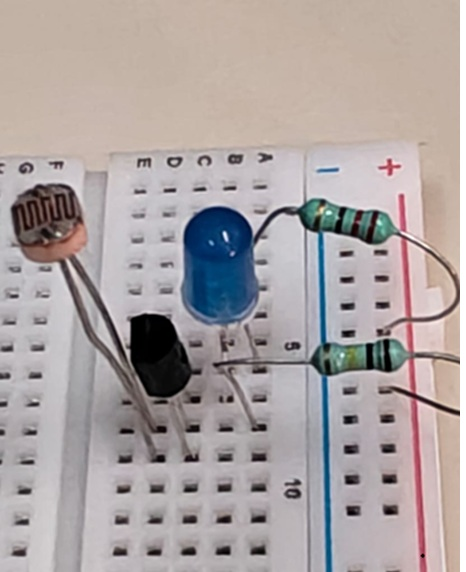
¿Qué es una fotorresitecia?
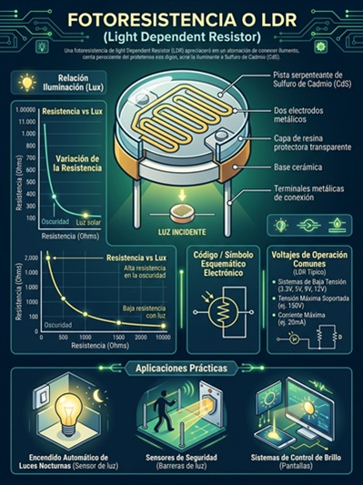
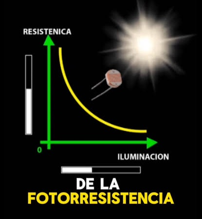
Una fotoresistencia, también conocida como LDR (Light Dependent Resistor), es un componente electrónico cuya resistencia eléctrica cambia dependiendo de la cantidad de luz que recibe. Cuando hay mucha luz, su resistencia disminuye y permite que pase una mayor cantidad de corriente eléctrica, mientras que cuando hay poca luz, su resistencia aumenta y deja pasar menos corriente
¿Dónde se utiliza?
Las fotoresistencias se utilizan principalmente para detectar la intensidad de la luz y pueden encontrarse en sistemas de iluminación automática, lámparas que se encienden al oscurecer, sensores de luz y proyectos electrónicos
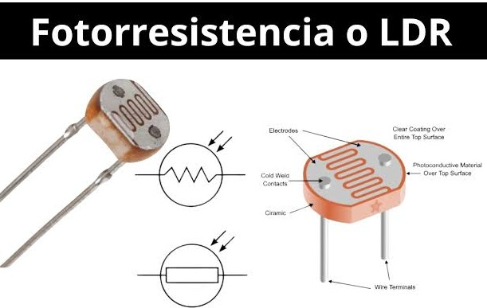
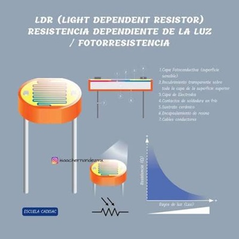
¿cómo funciona?
Es un componente electrónico que cambia su resistencia eléctrica dependiendo de la cantidad de luz que recibe. Cuando hay mucha luz, su resistencia disminuye, y cuando hay poca luz, su resistencia aumenta
Las resistencias
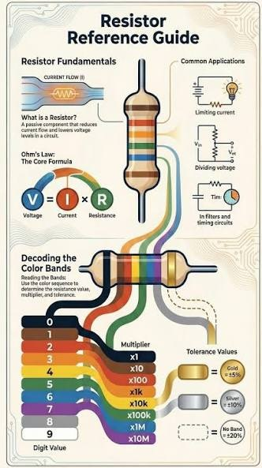
¿Para qué sirven?
Una resistencia se opone al paso de la corriente eléctrica. Ayuda a limitarla y a proteger componentes como los LED.
Unidad de medida: ohmio (Ω).
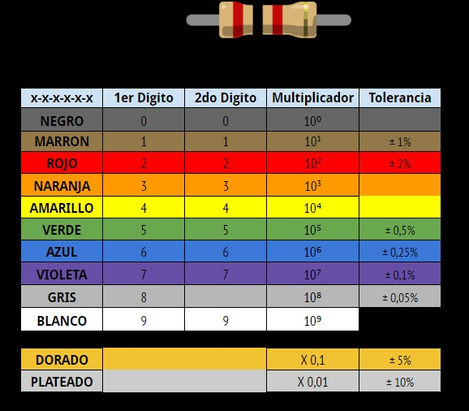
hay muchos tipos de resistencias con distindos valores y usos dependiendo el color de las lineas
La protoboard
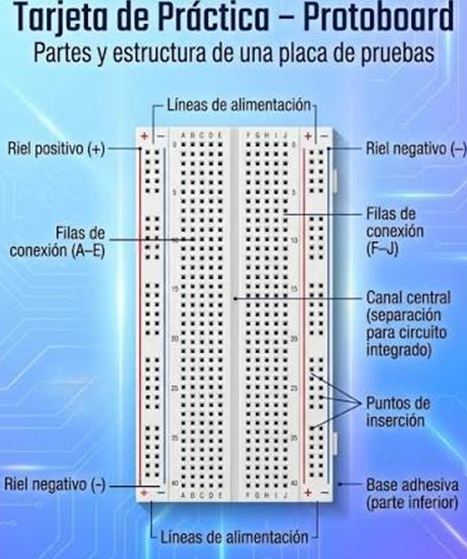
¿Qué es?
Es una placa con orificios y contactos metálicos internos que permiten conectar componentes sin necesidad de soldar.
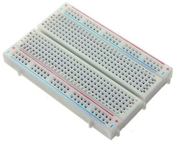
Ventaja: podemos probar y modificar circuitos fácilmente mediante filas y columnas de orificios conectados eléctricamente, facilitando la creación y prueba de circuitos.
LED
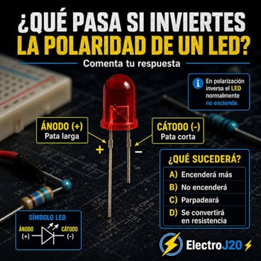
¿Qué es?
Un led prácticamente es un diodo semiconductor, que cuando se le aplica de 1.5 volts de corriente directa es capaz de emitir una radiación electromagnética que normalmente la conocemos como luz. Estos componen entes únicamente cuenta con dos terminales una para el voltaje y la otra para la tierra, cabe mencionar que estas terminales son bastante sencillas de reconocer ya que una es mas larga que la otra No, un LED no es un conductor en el sentido tradicional. Es un dispositivo semiconductor que permite el paso de corriente en una sola dirección y emite luz al recibir energía
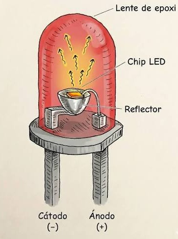
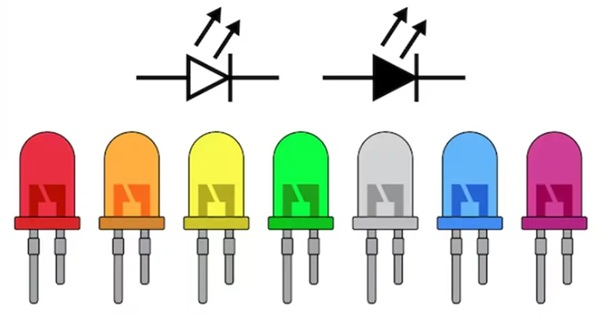
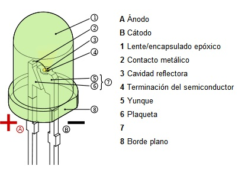
JUMPERS
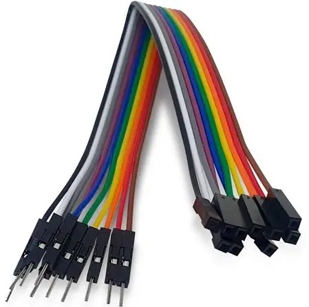
¿Qué son?
Los jumpers son pequeños conectores o puentes que permiten abrir o cerrar circuitos eléctricos para configurar manualmente dispositivos de hardware. Definición y Funcionamiento Un jumper es un componente pequeño, generalmente de plástico con un contacto metálico en su interior, que se coloca sobre dos pines adyacentes en una placa de circuito impreso para cerrar o abrir un circuito eléctrico de manera temporal o semipermanente
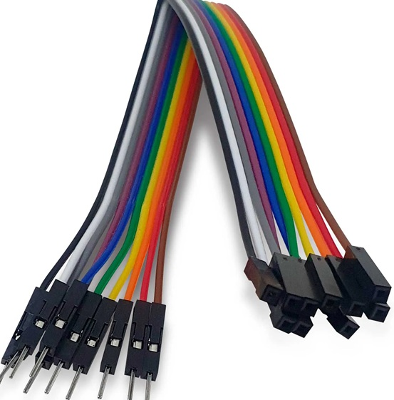
Ventaja:ofrecen una serie de ventajas que los hacen una opción popular en la moda y el deporte. Aquí hay algunas de sus principales ventajas: Versatilidad: Los jumpers son ideales para combinar con diferentes estilos y ocasiones, desde eventos informales hasta looks más sofisticados. 1 Calidez y comodidad: Confeccionados en telas ligeras y cómodas, los jumpers son perfectos para climas cálidos y proporcionan un buen nivel de abrigo. 1 Estilo y personalización: Los jumpers permiten una gran cantidad de personalización y estilo, adaptándose a diferentes gustos y preferencias. 1 Comodidad: Su diseño holgado y su confección en telas ligeras los hacen cómodos para el uso diario.